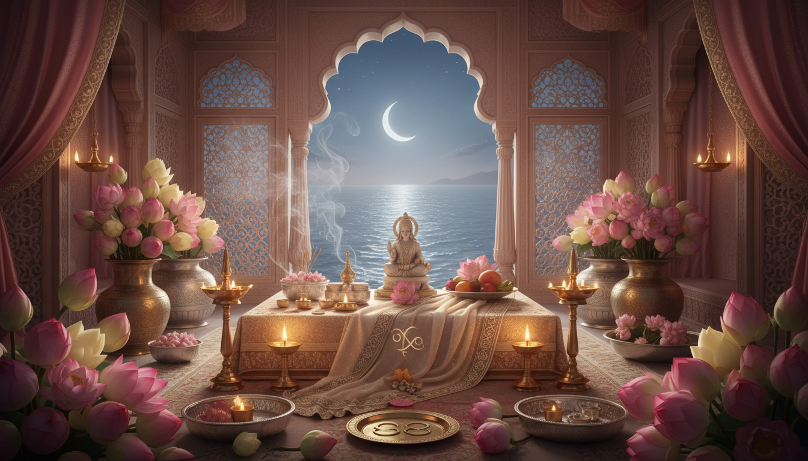

1. प्रस्तावना: जब शुक्र हृदय के घर में प्रवेश करता है
वैदिक ज्योतिष में शुक्र प्रेम, सामंजस्य, सौंदर्य, आराम, आनंद, संबंधों की समझ, और जीवन की मधुरता को ग्रहण करने की क्षमता का कारक है। जब शुक्र कर्क राशि में प्रवेश करता है, जो चंद्र द्वारा शासित राशि है, तब इच्छाएँ अधिक कोमल, भक्तिमय और भावनात्मक रूप से संवेदनशील हो जाती हैं। यह केवल प्रेम-संबंधों का गोचर नहीं है। यह घर, तंत्रिका-तंत्र, पारिवारिक कोमलता, और हृदय के पूरी तरह खुलने से पहले सुरक्षा महसूस करने की आवश्यकता से भी जुड़ा हुआ गोचर है।

इसी कारण यह गोचर वैदिक परामर्श और समग्र कल्याण दोनों के लिए महत्वपूर्ण माना जाता है। जलतत्त्व और चंद्र-प्रधान क्षेत्र में स्थित मजबूत शुक्र करुणा, सौंदर्यबोध, पोषण की भावना और घरेलू शांति को बढ़ा सकता है। लेकिन यदि मन अस्थिर हो, तो यही गोचर चिपकू व्यवहार, मनःस्थिति-आधारित आसक्ति, भावनात्मक सुकून के लिए अधिक खर्च, या रिश्तों में मौन निराशा के रूप में भी प्रकट हो सकता है। वैदिक शिक्षाएँ बार-बार यह संकेत देती हैं कि जब भावनात्मक क्षेत्र अस्थिर हो जाए, तब उपाय में ग्रह की समझ, भक्ति, शुद्धता और दैनिक अनुशासन का संगम होना चाहिए।
2. वैदिक शास्त्र शुक्र के बारे में क्या कहते हैं
शास्त्रीय ज्योतिष परंपरा में, विशेषकर बृहत् पराशर होरा शास्त्र में, शुक्र को मुख्य रूप से इन विषयों का कारक माना गया है:
- संबंध और विवाह
- सुख, सौंदर्य और परिष्कार
- सृजनात्मक और प्रजनन शक्ति
- वाहन, विलासिता और भोग
- काव्यात्मक भावना, कोमलता और आकर्षण
पराशर शुक्र को सौम्य, कलात्मक, आकर्षक और स्वाभाविक रूप से समृद्धि व आनंद से जुड़ा हुआ बताते हैं। लेकिन शास्त्रीय ज्योतिष आनंद को कभी केवल भोग-विलास नहीं मानता। जब इच्छा धर्म, कृतज्ञता और संयम से परिष्कृत होती है, तभी शुक्र शुभ फल देता है। दूसरे शब्दों में, शुक्र तब सबसे स्वस्थ होता है जब हमारा प्रेम हमें अपने केंद्र से दूर न ले जाए।
यह बात इसलिए भी महत्वपूर्ण है क्योंकि बहुत से लोग शुक्र को केवल रोमांस के माध्यम से समझते हैं। शास्त्रीय दृष्टि इससे कहीं व्यापक है। शुक्र वाणी की गुणवत्ता, संबंधों में न्याय, अपने वातावरण को सुंदर बनाने की क्षमता, और घर की ऊष्मा को बनाए रखने की शक्ति का भी द्योतक है।
3. कर्क में शुक्र अलग क्यों महसूस होता है
कर्क एक चंद्र-शासित राशि है, जो इन बातों से जुड़ी मानी जाती है:
- भावनात्मक स्मृति
- मातृत्व और देखभाल
- पोषण और ग्रहणशीलता
- घर, आश्रय और अपनापन
- मन की आंतरिक लहरें
जब शुक्र कर्क में प्रवेश करता है, तब स्नेह भावनात्मक सुरक्षा खोजता है। लोग अधिक भावुक, प्रियजनों के प्रति अधिक संरक्षणकारी, और घर के वातावरण की सूक्ष्म ऊर्जा से अधिक प्रभावित हो सकते हैं। तब सौंदर्य कोई अमूर्त विचार नहीं रहता। वह बहुत निजी और निकट अनुभव बन जाता है: साफ कमरे, कोमल वाणी, शांत भोजन, ताजे फूल, मधुर संगीत, चांदनी, और ऐसे छोटे-छोटे अनुष्ठान जो घर को आध्यात्मिक रूप से जीवंत बना दें।
परामर्श की दृष्टि से यही कारण है कि कर्क में शुक्र परिवार से जुड़ी पीड़ाओं और अधूरी भावनात्मक आवश्यकताओं को सतह पर ला सकता है। व्यक्ति संबंध चाहता है, लेकिन उसके भीतर भय, असुरक्षा, तुलना या रोष भी छिपा हो सकता है। इसलिए यह गोचर या तो भावनात्मक सुधार और गृह-चिकित्सा का समय बन सकता है, या फिर निर्भरता, अत्यधिक आसक्ति और भावनात्मक थकान का मौसम।
4. देवता-संबंध: शुक्र के लिए लक्ष्मी उपाय स्वाभाविक क्यों है
शुक्र के लिए सबसे व्यावहारिक भक्तिमय उपायों में से एक लक्ष्मी उपासना है। अनेक जीवित परंपराओं में शुक्र और देवी लक्ष्मी को सौंदर्य, समृद्धि, कृपा, सुगंध, सामंजस्य, उर्वरता और शुभ गृह-ऊर्जा के सूत्र से जोड़ा जाता है।
इसीलिए शुक्रवार के व्रत-उपवास, सफेद या गुलाबी अर्पण, सुगंधित पुष्प, तथा श्री सूक्त या कनकधारा स्तोत्र का पाठ शुक्र-संबंधी उपायों में अक्सर सुझाया जाता है। इसका गहरा अर्थ अंधविश्वास नहीं है। लक्ष्मी साधना हृदय को इन दिशाओं में प्रशिक्षित करती है:
- कमी की भावना के स्थान पर कृतज्ञता
- अव्यवस्था के स्थान पर परिष्कार
- पकड़ कर रखने की वृत्ति के स्थान पर उदारता
- संबंधों में आक्रामकता के स्थान पर सामंजस्य
- बाध्यकारी उपभोग के स्थान पर पवित्र समृद्धि
जब शुक्र कर्क से गुजरता है, तब लक्ष्मी उपाय और भी अर्थपूर्ण हो जाता है, क्योंकि उपचार केवल धन या प्रेम का नहीं होता। यह घर में श्री लाने का विषय है: शुद्धता के साथ सौंदर्य, भक्ति के साथ आराम, और भावनात्मक परिपक्वता के साथ स्नेह।
5. वैदिक दृष्टि से भावनात्मक उपचार
वैदिक परामर्श भावनात्मक पीड़ा को एक ही कारण तक सीमित नहीं करता। वह पूछता है: क्या मन अस्थिर है? क्या घर में रुकी हुई या भारी ऊर्जा है? क्या वाणी कठोर है? क्या शरीर अधिक गरम या अति-उत्तेजित है? क्या भक्ति का अभाव है? क्या प्रेम को निर्भरता समझ लिया गया है?
कर्क में शुक्र के समय ये प्रश्न विशेष रूप से प्रासंगिक हो जाते हैं। उपाय अक्सर सरल होता है: शरीर-मन को शीतल करना, घर को कोमल बनाना, मन को स्थिर करना, और संबंधों में पुनः आदर स्थापित करना।
इस गोचर के दौरान व्यावहारिक सात्त्विक सहयोग में ये बातें शामिल हो सकती हैं:
- नियमित समय पर शांत और पौष्टिक भोजन करना
- झगड़े, अंतहीन स्क्रीन-स्क्रोलिंग और देर रात जागने जैसी अति-उत्तेजनाओं को कम करना
- शयनकक्ष और पूजा-स्थल को स्वच्छ रखना
- घर में ताजे फूल, प्राकृतिक सुगंध और कोमल प्रकाश का उपयोग करना
- भोजन से पहले और सोने से पहले कृतज्ञता का अभ्यास करना
- भजन, मंत्र या शांत संध्या-प्रार्थना के लिए समय निकालना
आयुर्वेदिक दृष्टि से यह गोचर अक्सर ऐसी सात्त्विक दिनचर्या से अच्छा प्रतिसाद देता है जो भावनात्मक तीव्रता को शीतल करे। लक्ष्य दमन नहीं, बल्कि स्थिरता है।
6. असंतुलित शुक्र-चंद्र पैटर्न के चेतावनी संकेत
जब शुक्र कर्क की भावनात्मक जल-ऊर्जा के साथ अनुशासन के बिना मिल जाता है, तब कुछ पैटर्न तीव्र हो सकते हैं:
- बार-बार आश्वासन माँगना और स्वर के छोटे बदलावों से भी आहत हो जाना।
- भावनात्मक खालीपन भरने के लिए खर्च करना, जैसे भोजन, सजावट, उपहार या छोटे-छोटे विलास।
- प्रेम का आदर्शीकरण, जिसके बाद निराशा आना।
- देखभाल के नाम पर अपनी सीमाएँ भूल जाना।
- पुरानी स्मृतियों से चिपके रहना, जिससे वर्तमान उपचार रुक जाए।
- अनकही अपेक्षाओं के कारण घरेलू असामंजस्य।
ऐसे ही समय में शास्त्र-आधारित उपाय उपयोगी हो जाते हैं। उपाय का उद्देश्य मनोविज्ञान से बचना नहीं है। उसका उद्देश्य लय, भक्ति और प्रतीकात्मक पुनर्संतुलन के माध्यम से उसे सहारा देना है।
7. इस गोचर के लिए सरल लक्ष्मी और शुक्र उपाय
यदि आप कर्क में शुक्र के दौरान एक स्थिर और व्यावहारिक उपाय-ढाँचा चाहते हैं, तो मूल बातों से शुरुआत करें:
शुक्रवार के अभ्यास
- सरल शुक्रवार अनुशासन रखें: स्वच्छता, कोमल वाणी और कृतज्ञता।
- देवी लक्ष्मी को सफेद पुष्प, चंदन की सुगंध, या छोटा घी का दीपक अर्पित करें।
- श्री सूक्त, लक्ष्मी अष्टोत्तर या कनकधारा स्तोत्र का पाठ जल्दबाज़ी में नहीं, स्थिर मन से करें।
गृह-उपाय
- घर के उत्तर या ईशान कोण को साफ और अव्यवस्था-मुक्त रखें।
- बिस्तर की चादरें, वेदी के वस्त्र और जल-पात्रों को ताज़ा रखें।
- क्रोध में भोजन करने से बचें और जहाँ तक संभव हो मुख्य रहने वाले स्थान में विवाद से भी बचें।
- घर में एक ऐसा कोना बनाएं जहाँ प्रवेश करते ही शांति महसूस हो।
संबंधों के उपाय
- विशेषकर रात के समय धीरे और कोमलता से बोलें।
- बिना हिसाब रखे देखभाल का एक कार्य करें।
- भावनात्मक परीक्षा लेने की आदत छोड़कर सीधी बातचीत अपनाएँ।
- जब अहंकार हृदय को कठोर बना दे, तब तुरंत क्षमा माँगें।
शरीर और मन के लिए सहयोग
- शीतल और सात्त्विक दिनचर्या को प्राथमिकता दें।
- सोने से पहले की अति-उत्तेजना कम करें।
- जल, चांदनी या प्रार्थनामय मौन के निकट समय बिताएँ।
- लिखें कि वास्तविक प्रेम और भावनात्मक निर्भरता में क्या अंतर है।
8. कर्क में शुक्र के लिए सात-दिवसीय रीसेट
जो पाठक कुछ व्यावहारिक करना चाहते हैं, उनके लिए यह सात-दिवसीय लय उपयोगी हो सकती है:
- दिन 1: घर के पूजा-स्थल या प्रार्थना-कोने की सफाई करें।
- दिन 2: पुष्प अर्पित करें और लक्ष्मी मंत्र का 108 बार जप करें।
- दिन 3: सरल सात्त्विक भोजन करें और प्रतिक्रिया-प्रधान वाणी से बचें।
- दिन 4: माँ, किसी संरक्षक व्यक्ति, या स्त्री-वंश के प्रति कृतज्ञता के साथ पुनः जुड़ें।
- दिन 5: शुक्रवार उपाय करें और किसी जरूरतमंद महिला को उपयोगी वस्तु दान दें।
- दिन 6: शाम को ऑफलाइन रहकर घर में शांत वातावरण बनाएँ।
- दिन 7: मनन करें कि आप अपने भीतर के धर्म के बजाय बाहर कहाँ सुकून खोज रहे हैं।
यहीं से गोचर औषधि बनता है। केवल भविष्यवाणी से नहीं, बल्कि सचेत सहभागिता से।
9. शास्त्र का गहरा संदेश
शुक्र से जुड़ा शास्त्रीय संदेश यह नहीं है कि 'सुख के पीछे भागो'। उसका सार यह है: जीवन को इतना सुंदर, कोमल और संतुलित बनाओ कि मन कृतज्ञ हो जाए और धर्म के साथ संरेखित हो सके। कर्क इसमें एक और परत जोड़ता है: सच्चा सौंदर्य केवल वही नहीं जो दिखाई दे, बल्कि वह भी है जो घर, हृदय और हमारे चारों ओर के भावनात्मक क्षेत्र में महसूस किया जाए।
इसलिए यदि यह गोचर आपको अधिक कोमल बना रहा है, तो उस संवेदनशीलता को व्यर्थ मत जाने दें। उसे पवित्र बनाइए। अपनी दिनचर्या में लक्ष्मी को स्थान दें। अपनी वाणी में कोमलता लाएँ। अपने संबंधों में भक्ति जोड़ें। और अपने घर में व्यवस्था स्थापित करें।
यही भावनात्मक उपचार का वैदिक मार्ग है: न पलायन, न इनकार, बल्कि भावना को अनुग्रह, लय और आंतरिक पोषण में स्थिर रूप से रूपांतरित करना।
Sources
- Fact Sheets-Venus (Shukra) in Vedic Astrology - astrosutras.in
- Things Finally Work Out for 6 Zodiac Signs as Venus Enters Cancer on May 19, 2026
- Harmonizing Venus: Invoking Goddess Lakshmi for Prosperity and Love. | by Karuna Astrology - Medium
- Fourth House in Vedic Astrology: Mother, Home, Property | AstroSight
- Shukravar Vrat - Procedure, Mantra and Significance of Friday Fast - Eshwar Bhakti
- (Shukra) Venus in Vedic Astrology: The Planet of Desire, Dharma, and Divine Pleasure
- Shukravar Vrat Katha And Puja Vidhi: Why Devotees Observe Friday ...
- About Venus (Shukra Graha) Planet in Astrology and Remedies
- Friday Fasting: Procedure, Benefits & Powerful Mantra - Life Horoscope Spiritual
- Friday Fast - Rituals, Method, and Benefits - Anytime Astro
- Venus in Brihat Parashara Shastra | PDF | History - Scribd
- Venus in All 12 Houses – The Mystic Journey of Shukra's Light and Shadows
- Kanakadhara Stotram Adi sankaracharya - Sai Mahalakshmi
- Friday Fasting for Goddess Lakshmi and Lord Sukra - May2026 - AstroVed
- Venus in 4th House: Love and Luxury | PDF - Scribd
- Cancer and Moon: Vedic Ruling Planet Meaning - ZODIAQ
- Kanakadhara Stotram: Lyrics & Meaning | PDF | Hindu Iconography - Scribd
- Planets in Cancer - Vedic Astrology Basics : r/Nakshatras - Reddit
- Moon in Vedic Astrology: Karma, Health, Money and Relationships
- Lajjitaadi Avasthas - Astrology-Videos.com
- Essence Of Skanda Purana Description of Celestial - Kamakoti.org
- (PDF) Brihat Parashara Hora Shastra: Effects of the Fourth House - Academia.edu
- Incense Sticks and Their Connection with Positive Energy and Vastu - toproz - Webflow
- Meditation and the Science of Sattva: Ayurveda's Blueprint for Mental Clarity and Emotional Balance
- Vastu for Health & Healing: A Guide to a Vibrant Life
- Vastu for Health: Creating Healing Environments for a Vibrant Life ...
- Ayurvedic therapies for psycho-mental balance - Europäische Akademie für Ayurveda
- The Moon in Your Birth Chart: What It Secretly Reveals About Your Emotional Nature | by Richaa Kamra | The Technical Vedic Astrologer | Medium
- 5 Steps to Creating a Spiritual sanctuary at Home - Prabhuji's Gifts
- Nurturing Mental Health Through The Holistic Wisdom Of Ayurveda
- Mental Health And Ayurveda A Holistic Guide To Emotional Wellbeing
- Holistic Healing for Anxiety: Ayurvedic Therapies, Herbal Remedies, and Meditation Practices - Ayursh
- Ayurveda and Mental Health for Pandemic Recovery
- Ancient Indian perspectives and practices of mental well-being - PMC
- The Moon(Chandra Dev): Secrets and Untold Mythological Stories - Medium
- The Role of Mythology in Vedic Astrology: Bridging Stories and Stars
- The Role of Ayurveda in Mental Health: A Holistic Approach to Wellness - Nisarga Herbs
- Ayurvedic concepts related to psychotherapy - PMC
- Tending the Mind: Sattvic Practices for Addressing the Three Causes of Imbalance | Kripalu
- Brihat Parashara Hora Sashtra by Rishi Parashara - AWS
- Five vastu elements, one simple ritual: The holistic lamp that brings positive energy at homes - The Times of India
- Venus in Cancer - AstroSage
- Moon Venus Conjunction in Astrology: Meaning, Benefits, Effects & Remedies
- Kanakdhara Stotram & Sri Suktam PDF - Scribd
- Avastha Vichar of Planets in Vedic Astrology - astrosutras.in
- Planetary Avasthas - Astro Isha
- 4th House of Astrology: Home, Family, and Emotional Foundation - Rudraksha Ratna
- The Story of the Moon - Consult Lunar Astro
- Sri Sukta: Invocation of Lakshmi | PDF | Hindu Deities - Scribd
- Book Sri Suktam Puja & Yagna - Shaligram Shala
- Kanakadhara-Stotra-with-English-subtitles | Goddess-MahaLakshmi | MS SUBBULAKSHMI
- Full text of "Brihat ParÄÅ›ara HorÄ ÅšhÄstra By R. Santhanam" - Internet Archive
- Phaladeepika PDF - Scribd
- शà¥à¤°à¥€ लकà¥à¤·à¥à¤®à¥€ सà¥à¤¤à¥‹à¤¤à¥à¤°: Shri Lakshmi Stotra (Sri Suktam, Kanakadhara Stotram, Lakshmi Suktam Dhanda Lakshmi Stotram With Debt Relief Mangal Stotram, Lakshmi Kavach and Aartis) | Exotic India Art
- Which 3 Zodiac Signs Will See Relationships Improve Dramatically After May 18?
- Daily Meditation & Yoga Routine | Nourish Your Soul
- Cultivating Daily Sattvic Rituals for Inner Peace: The Sattva Path
- Nourishing the Mind: Exploring the Mental Health Benefits of a Sattvic Diet and Yogic Practices - IJIP
- Phaladeepika: Vedic Astrology Insights | PDF - Scribd
- Parasara Sastra Hora
- Sound of Divinity (6) - Hymns - "Sri Lakshmi Ashtothram & Kanakadhara Sthavam & Sri Suktham" - YouTube
- “INDIAN CALENDAR AND RELIGIOUS OBSERVANCES IN THE SKANDA PURANA†- IJPub.org
- Skanda Purana - Anushtanam
- Shravan maas vrats and rituals - Hindu Janajagruti Samiti
- Venus in the 12th House: Vedic Astrology
- Venus In 12Th House Meaning Impact And Remedies — Guide | AstroVed.com
- Venus in 12 Houses: Love, Money & Beauty Placement in Your Birth Chart - Astroshastra
- Friday Puja Remedies: Powerful Lakshmi Rituals That Remove Money Problems And Bring Endless Prosperity - ABP Live
- Friday Remedies: How to Receive Goddess Lakshmi's Divine Prosperity
- Tips To Please Goddess Laxmi On Friday To Bring Prosperity And Wealth - ABP Live
- Friday Puja: Follow These Sacred Rituals To Seek Blessings Of Goddess Lakshmi And Bring Prosperity - ABP Live
- Moon-Venus Conjunction - Indastro
- BRIHAT PARASHARA HORA SHASTRA Vol 1 - En'gI Isht Rans I A Tion, C Ommenlary, Annotation and Editing by R. SANTHANAM | PDF | Astrology - Scribd
- Venus Moon Conjunction. : r/Nakshatras - Reddit
- The Moon, Venus, Goddesses, Belonging, Fitness and Food - Part 1 - Imagine Astrology
- Friday remedies: Do THESE 6 things to impress Goddess Lakshmi - Webdunia English
- View of Nature in the Vedas: Sources of Life and Psychic Healing
- Benefits of Vedic learning for improving competence and strengthening mental health